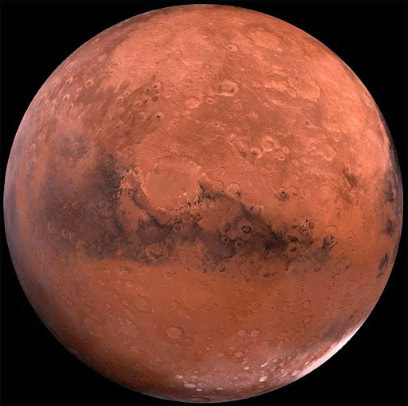

Si la Tierra es conocida como el ‘planeta azul’, a Marte se le suele llamar
‘planeta rojo’, lógicamente por su aspecto rojizo. Posee el volcán más grande
de los ocho planetas del Sistema Solar. Uno de los grandes hallazgos científicos
de los últimos años ha sido encontrar en Marte agua subterránea. Tiene dos
satélites llamados Fobos y Deimos.
Es uno de los planetas más investigados y existen muchas leyendas sobre que
en él existen seres inteligentes. De hecho, la palabra ‘marciano’ se refiere a
‘habitante de Marte’. Esto, al menos por ahora, es pura ciencia ficción.
Su nombre es en honor a Marte, dios romano de la guerra.
